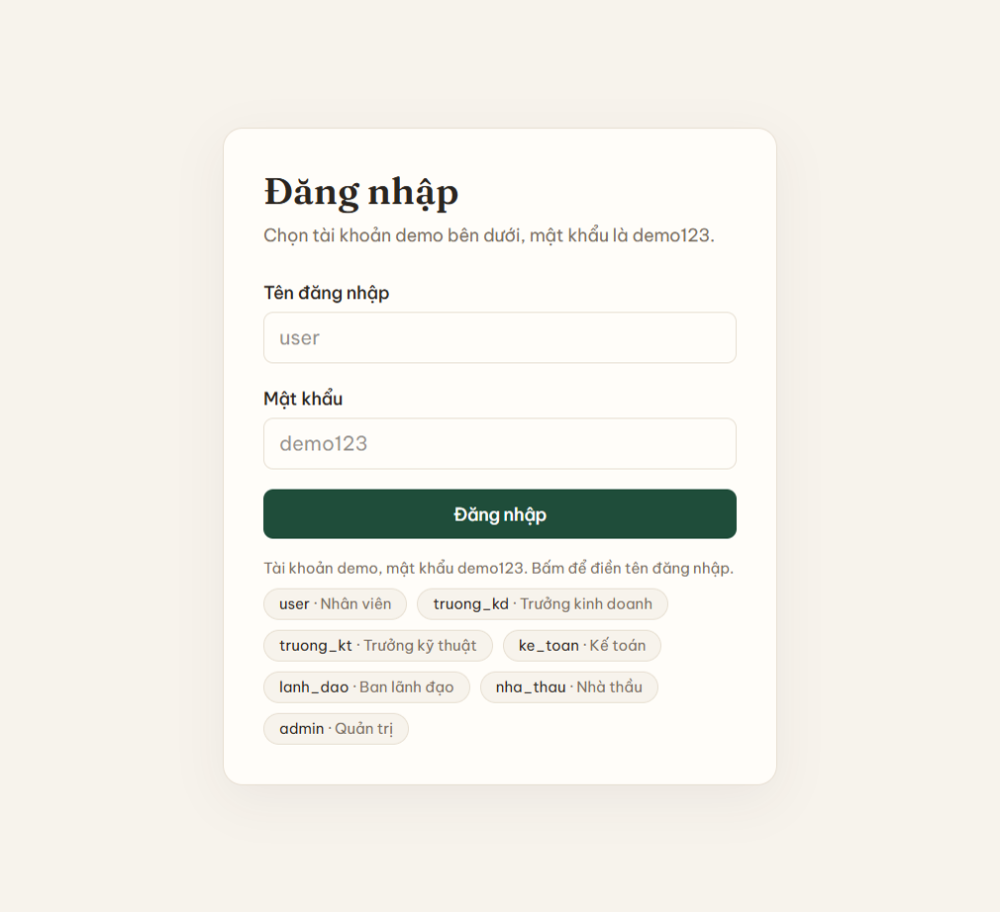
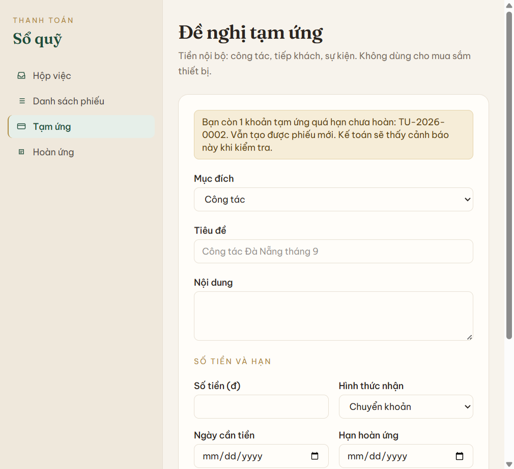
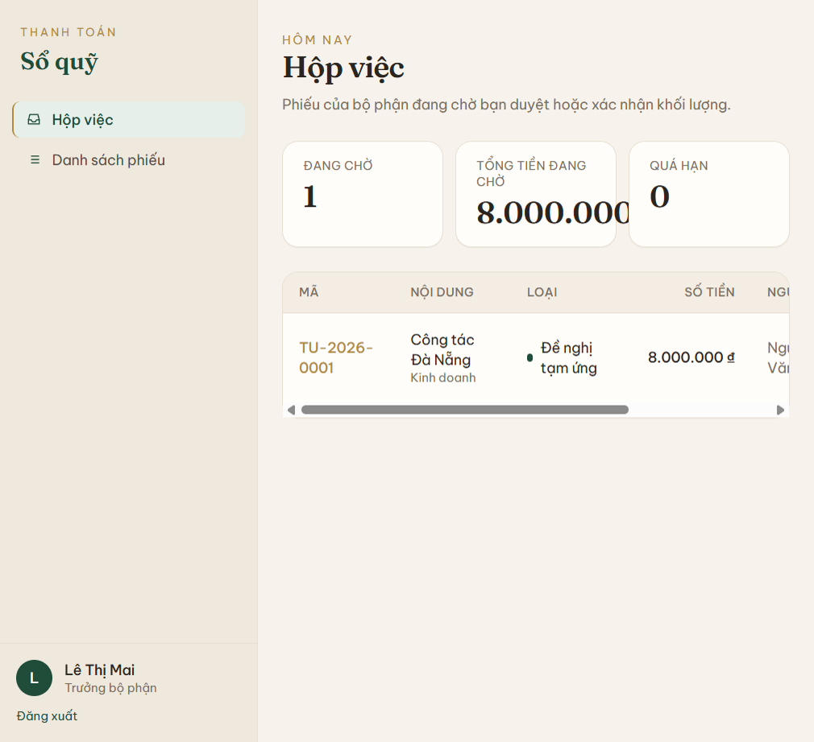
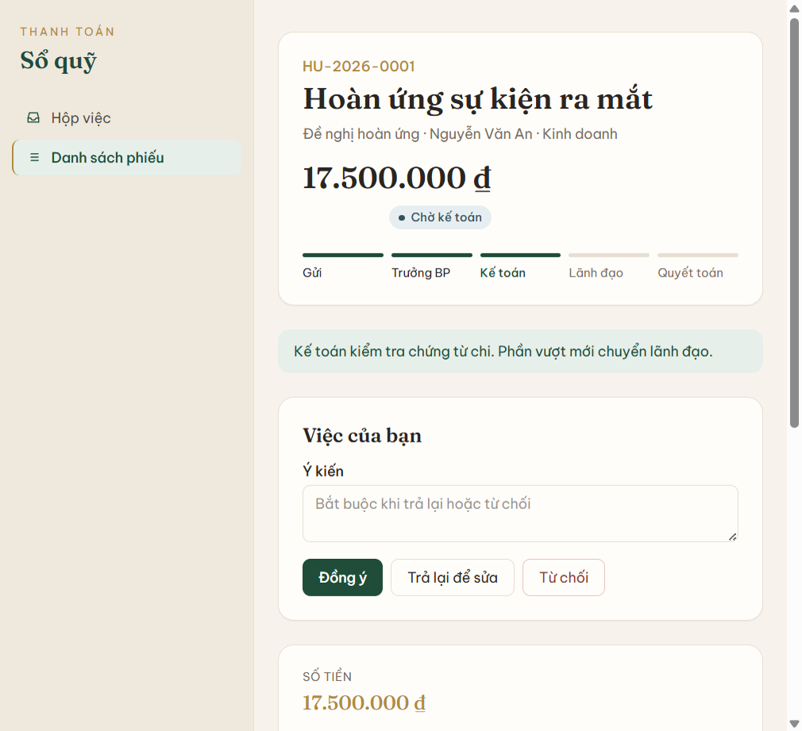

Giao diện
Menu trái tên Sổ quỹ, nền kem. Mục đang mở có nền xanh nhạt và vạch vàng đồng bên trái. Tiêu đề và số tiền dùng chữ serif.
- Hộp việc — phiếu đang chờ bạn, kèm ba số: đang chờ, tổng tiền đang chờ, quá hạn.
- Danh sách phiếu — mọi phiếu bạn được xem.
- Tạm ứng và Hoàn ứng — form tạo phiếu nội bộ. Chỉ nhân viên và quản trị thấy.
- Cổng nhà thầu — form thanh toán. Chỉ nhà thầu và quản trị thấy.
- Quản trị — danh sách người dùng. Chỉ quản trị thấy.
Trên chi tiết phiếu, thanh tiến trình đọc từ trái sang phải. Bước đã qua tô xanh đậm, bước hiện tại tô xanh lá, bước chưa tới để nhạt. Hoàn ứng chi không vượt sẽ gạch ngang bước lãnh đạo và ghi “Bỏ qua lãnh đạo”. Badge trạng thái có chấm màu: tạm ứng xanh lá, hoàn ứng vàng đồng, thanh toán nâu.



Đăng nhập
| Tài khoản | Vai trò | Việc trên dữ liệu demo |
|---|---|---|
user | Nhân viên | Tạo tạm ứng, hoàn ứng. Có phiếu quá hạn TU-2026-0002 |
truong_kd | Trưởng Kinh doanh | Duyệt TU-2026-0001 |
truong_kt | Trưởng Kỹ thuật | Xác nhận khối lượng TT-2026-0002 |
ke_toan | Kế toán | Kiểm tra HU-2026-0001, chi TU-2026-0005 |
lanh_dao | Ban lãnh đạo | Duyệt TU-2026-0004 |
nha_thau | Nhà thầu | Gửi đề nghị thanh toán |
admin | Quản trị | Xem mọi phiếu và thao tác thay vai trò |
Mọi phiếu đi đủ bốn bước: trưởng bộ phận, kế toán, lãnh đạo, kế toán chi. Không có ngưỡng tiền để bỏ qua lãnh đạo. Tạm ứng mới vẫn tạo được khi còn khoản chưa hoàn; quá hạn chỉ hiện cảnh báo.
Thao tác theo vai trò
Nhân viên
- Đăng nhập
user. Hộp việc hiện phiếu quá hạn nếu có. - Bấm Tạm ứng. Chọn mục đích, nhập tiêu đề, nội dung, số tiền, ngày cần tiền, hạn hoàn ứng. Chuyển khoản thì nhập số tài khoản. Bấm Gửi duyệt hoặc Lưu nháp.
- Bấm Hoàn ứng. Chọn một phiếu tạm ứng đã chi, thêm từng dòng chi. Form hiện tổng chi và phần chênh. Bấm Gửi duyệt.

Trưởng bộ phận
- Đăng nhập
truong_kdhoặctruong_kt. Hộp việc chỉ có phiếu của bộ phận mình. - Mở phiếu. Với tạm ứng hoặc hoàn ứng bấm Đồng ý, Trả lại để sửa, hoặc Từ chối. Với thanh toán nhà thầu, nút đồng ý là Xác nhận khối lượng.
- Trả lại hoặc từ chối thì phải nhập ý kiến.

Kế toán
- Đăng nhập
ke_toan. Hộp việc gồm phiếu chờ kiểm tra và phiếu chờ chi. - Với hoàn ứng: nếu chi vượt, bấm Đồng ý để chuyển lãnh đạo. Nếu chi ít hơn, bấm Chuyển thu tiền thừa. Nếu bằng, bấm Quyết toán.
- Với phiếu chờ chi: nhập ngày, số chứng từ hoặc số ủy nhiệm chi, rồi bấm Xác nhận.

Lãnh đạo
Đăng nhập lanh_dao, mở phiếu chờ duyệt, bấm Đồng ý hoặc từ chối kèm lý do. Mọi số tiền đều qua bước này, trừ hoàn ứng không chi vượt.
Nhà thầu
- Đăng nhập
nha_thau. Menu chỉ có Hộp việc và Cổng nhà thầu. Không có Tạm ứng. - Nhập nội dung, số hợp đồng, giá trị hợp đồng, đợt, số tiền, bộ phận phụ trách. Đính kèm công văn, biên bản nghiệm thu, bảng giá trị, hóa đơn VAT.
- Bấm Gửi đề nghị. Nếu lũy kế vượt giá trị hợp đồng, hệ thống không nhận.

Quản trị
Đăng nhập admin. Thấy mọi menu và mọi phiếu. Khi một phiếu đang chờ vai trò nào, quản trị bấm được nút của vai trò đó.
Đề nghị tạm ứng
Nhân viên nhập mục đích (công tác, tiếp khách, sự kiện, khác), nội dung, số tiền, ngày cần tiền, hạn hoàn ứng, tiền mặt hoặc chuyển khoản. Có thể đính kèm kế hoạch và dự trù.
sequenceDiagram
participant NV as Nhân viên
participant HT as Hệ thống
participant TBP as Trưởng bộ phận
participant KT as Kế toán
participant LD as Ban lãnh đạo
NV->>HT: Tạo đề nghị tạm ứng
HT->>TBP: Chờ trưởng bộ phận duyệt
TBP->>HT: Duyệt
HT->>KT: Chờ kế toán kiểm tra
KT->>HT: Đồng ý
HT->>LD: Chờ lãnh đạo duyệt
LD->>HT: Duyệt
HT->>KT: Chờ chi tiền
KT->>HT: Đã chi, ghi chứng từ
HT-->>NV: Đã nhận tiền, chờ hoàn ứng trước hạn
Từ chối thì phiếu thành Từ chối, kèm lý do. Trả lại thì về Nháp để sửa và gửi lại.
Đề nghị hoàn ứng
Chọn một phiếu tạm ứng đã chi của chính mình, kê từng khoản chi. Hệ thống tính chênh lệch. Chi vượt thì lãnh đạo duyệt phần vượt. Chi ít hơn thì kế toán xác nhận đã thu tiền thừa. Chi bằng thì quyết toán luôn.
sequenceDiagram
participant NV as Nhân viên
participant HT as Hệ thống
participant TBP as Trưởng bộ phận
participant KT as Kế toán
participant LD as Ban lãnh đạo
NV->>HT: Chọn phiếu tạm ứng, kê chi phí thực tế
HT->>TBP: Chờ trưởng bộ phận duyệt
TBP->>HT: Duyệt
HT->>KT: Chờ kiểm tra chứng từ
alt Chi vượt số đã ứng
KT->>HT: Chứng từ hợp lệ
HT->>LD: Chờ duyệt phần vượt
LD->>HT: Duyệt
KT->>HT: Chi thêm phần thiếu
else Chi ít hơn số đã ứng
NV->>KT: Nộp lại tiền thừa
KT->>HT: Xác nhận đã thu
end
HT-->>NV: Đã quyết toán, tạm ứng gốc đã hoàn
Đề nghị thanh toán
Nhà thầu nhập trên cổng nhà thầu: số hợp đồng, giá trị hợp đồng, đợt, số tiền, bộ phận phụ trách, và file hồ sơ. Một hợp đồng có nhiều đợt. Lũy kế không được vượt giá trị hợp đồng. Nhà thầu không tạo tạm ứng.
sequenceDiagram
participant NT as Nhà thầu
participant HT as Hệ thống
participant TBP as Bộ phận phụ trách
participant KT as Kế toán
participant LD as Ban lãnh đạo
NT->>HT: Gửi đề nghị thanh toán kèm hồ sơ
HT->>TBP: Chờ xác nhận khối lượng
alt Hồ sơ thiếu hoặc sai
TBP->>HT: Trả lại
HT-->>NT: Bổ sung hồ sơ và gửi lại
else Hồ sơ đủ
TBP->>HT: Xác nhận khối lượng
HT->>KT: Chờ kiểm tra hóa đơn và lũy kế
KT->>HT: Đồng ý
HT->>LD: Chờ lãnh đạo duyệt
LD->>HT: Duyệt
KT->>HT: Chi tiền, ghi số ủy nhiệm chi
HT-->>NT: Đã thanh toán
end
Ai thấy phiếu nào
- Nhân viên: chỉ phiếu của mình.
- Trưởng bộ phận: phiếu của bộ phận mình và phiếu nhà thầu giao bộ phận đó theo dõi.
- Nhà thầu: chỉ đề nghị thanh toán của mình.
- Kế toán, ban lãnh đạo, quản trị: mọi phiếu.
Trạng thái
| Trạng thái | Ý nghĩa |
|---|---|
| Nháp | Người tạo đang sửa |
| Chờ trưởng bộ phận | Duyệt nội bộ hoặc xác nhận khối lượng |
| Chờ kế toán | Kiểm tra chứng từ và lũy kế |
| Chờ lãnh đạo duyệt | Duyệt cuối. Hoàn ứng chỉ khi chi vượt |
| Chờ chi / thu tiền | Kế toán chi hoặc thu phần chênh |
| Đã chi, chờ hoàn ứng | Tạm ứng đã nhận tiền |
| Đã hoàn ứng / Đã quyết toán | Hoàn ứng xong |
| Đã thanh toán | Nhà thầu đã nhận tiền |
| Từ chối | Dừng, có lý do |
| Trả lại | Nhà thầu bổ sung hồ sơ. Phiếu nội bộ trả về thì về Nháp |